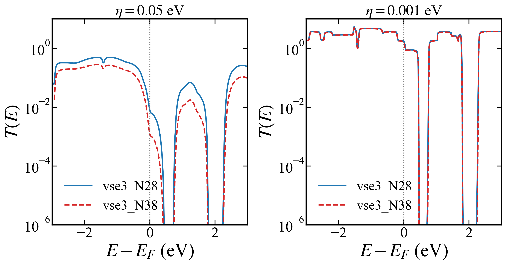
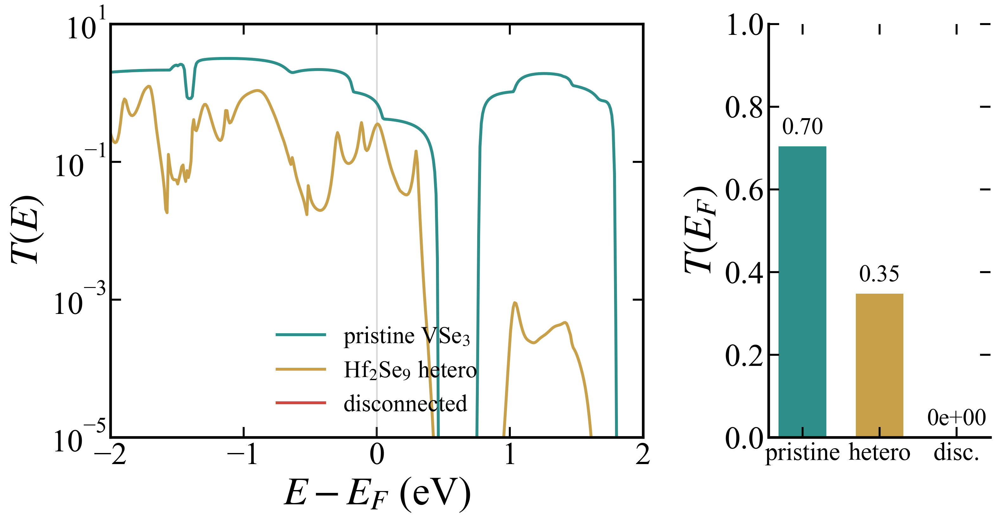
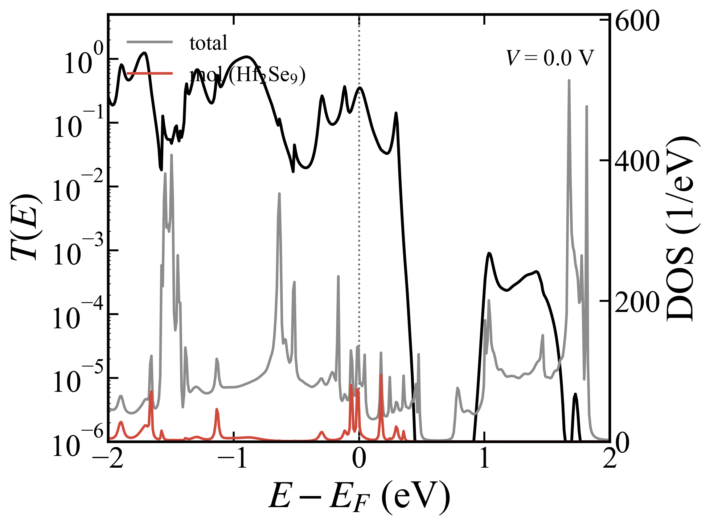
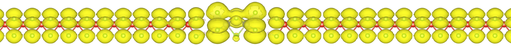
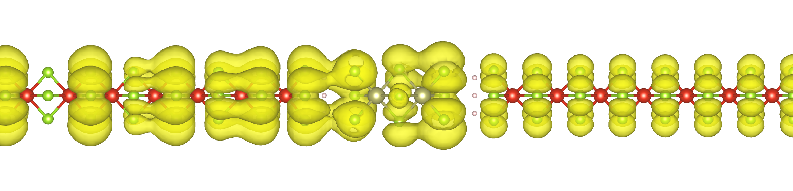
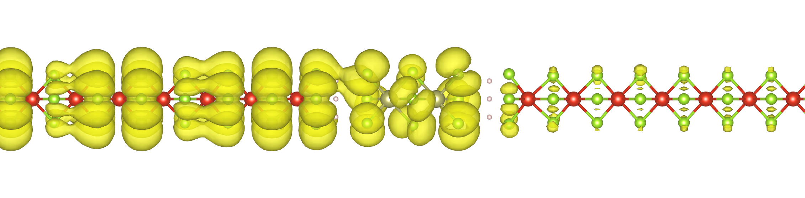
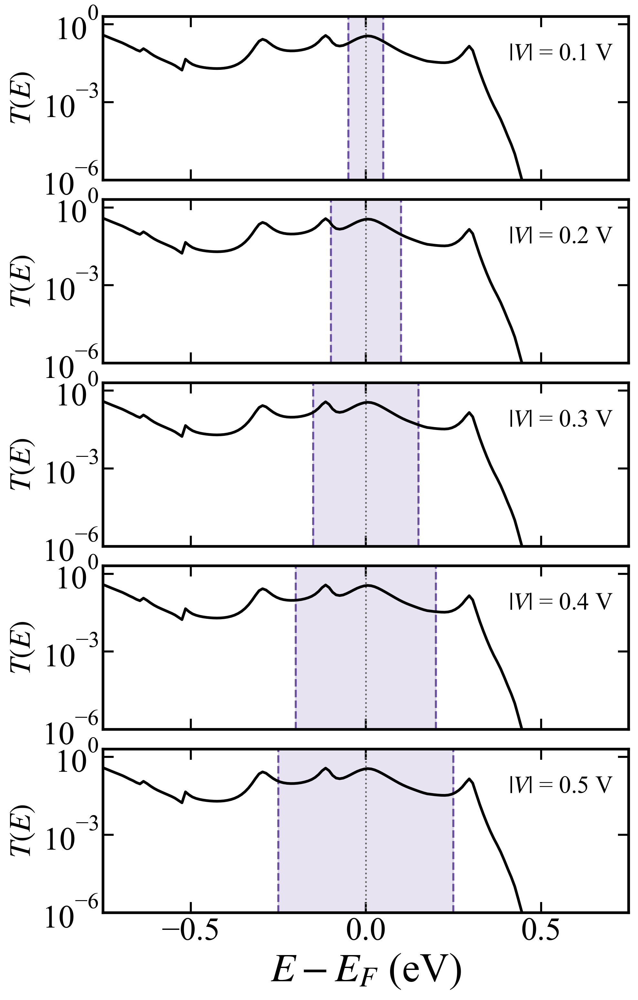
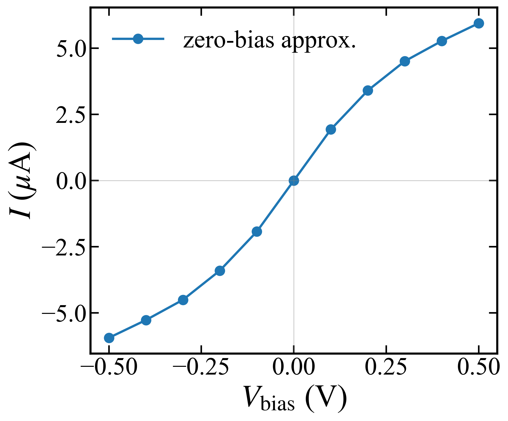

Transmission — the molecule is the conduction bridge
Goal
Show whether current flows through the molecule, through which channel, and what the zero-bias I–V looks like.
Method
TranSIESTA / TBtrans, vdW-DF2, ~220-atom device, electrode $k=100$, $\eta=0.005$ eV.
$T(E)$ extracted with sisl from trans.TBT.nc; eigenchannels from spectral-function
decomposition at $E_F$, HOMO, and LUMO.
Device structure
The full ~220-atom scattering region — two VSe₃ leads with the Hf₂Se₉ molecule at the centre (drag to rotate, scroll to zoom):
Result
A. Pristine VSe₃ — length dependence is an η artifact
For a continuous chain, $T(E)$ must be independent of electrode $k$-grid and scattering-region length. At $\eta=0.05$ eV the broadening makes $T(E)$ length-dependent (N28 vs N38); at $\eta=0.001$ eV it returns to length-independent — the dependence is a broadening artifact, not physics.

B. Three-way comparison — the molecule is the sole bridge
| System | $T(E_F)$ | Reading |
|---|---|---|
| Pristine VSe₃ | 0.704 | reference (continuous chain) |
| Heterojunction | 0.348 | conducts through the molecule |
| Disconnected | 0.000 | molecule removed → no conduction |

The transmitting states are molecular: the Hf₂Se₉ frontier (HOMO/LUMO, near-degenerate and pinned at $E_F$ — isolated-molecule HOMO $=-0.020$, LUMO $=+0.003$ eV, gap $0.023$ eV) sits right at $E_F$, so the molecular PDOS peaks there ($-0.065$ / $0$ eV) and the $T(E)$ peaks line up. The $+0.175$ eV peak is a higher unoccupied molecular resonance at $+0.15$ eV (isolated MO87/88), well above the $E_F$-pinned frontier manifold (MO82–86) — not the LUMO.

C. Eigenchannel — the channel runs through the molecule
Real-space $|\psi|^2$ isosurface of the transmitting eigenchannel (from the
EC_0_psi2_*.cube files; V grey, Se green). At $E_F$ the channel (EC₀,
$\tau=0.999$) runs along the whole device and clearly threads through the Hf₂Se₉
at the centre — direct real-space evidence of molecule-mediated conduction.



D. I–V from the zero-bias approximation
Integrating the zero-bias $T(E)$ over the bias window (Landauer), without recomputing $T(E)$ at finite bias, gives the I–V. It is asymmetric (≈ $+5$ / $-2.5$ μA at $\pm0.5$ V).


Discussion
Conduction is resonant because the PBE/vdW-DF molecular resonance sits on $E_F$. Whether it stays resonant under a corrected gap is the open question driving the B3LYP level correction; the finite-bias I–V is the remaining deliverable.